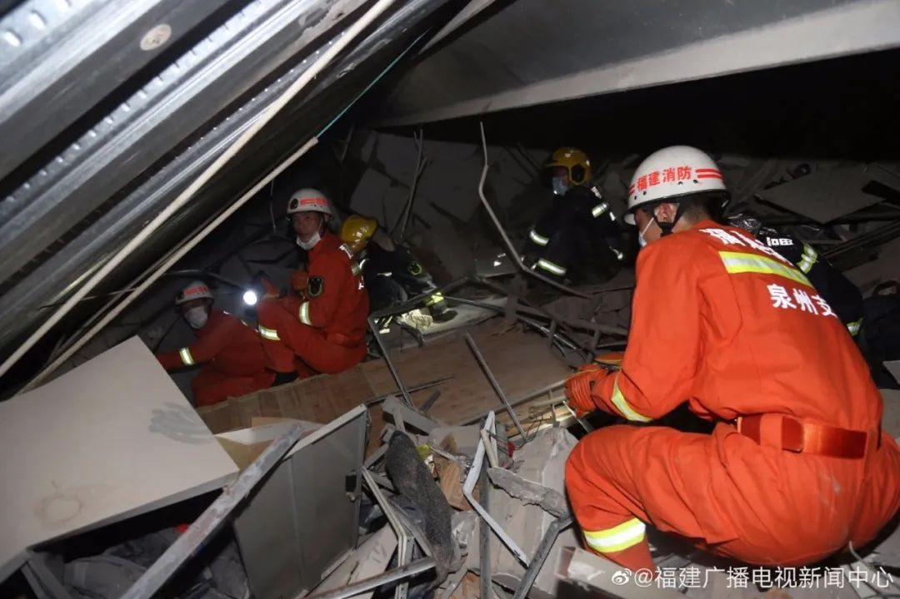
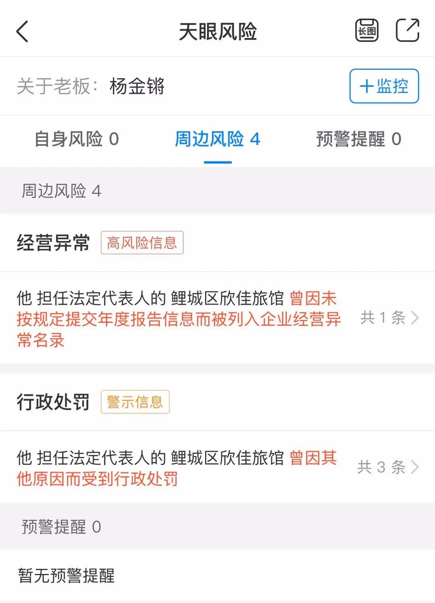

泉州隔离点酒店坍塌：倒塌前几分钟柱子变形，酒店业主被警方控制 | 深度聚焦
原文链接 备份链接 记者/曹慧茹 李佳楠 佟晓宇 李东 实习记者/周缦卿 编辑/ 石爱华 宋建华 泉州一七层建筑整体坍塌 3月7日19时15分，泉州市鲤城区一栋大楼发生整体坍塌事故，事故现场共有71人被困（不含自救逃生的9人）。截至3月8 …

酒店在装修期间，就曾引发同楼商户对承重能力的担忧。“在酒店装修的那两三个月，因为压力问题，我们一楼商户的门窗玻璃被挤压炸裂五六块，后来觉得房子太危险，我就搬走了。”
记者 | 吴 雪
3月7日，随着莆田、漳州两市11名新冠肺炎住院患者治愈，福建九个设区市实现住院患者清“0”，也正是这一天晚上7点20分左右，泉州市一家隔离酒店——鲤城区欣佳酒店楼体突然发生坍塌，当时伤亡情况不明。
现场紧急救援（视频来源：央视新闻）

欣佳酒店坍塌现场
事故发生后，福建省消防救援总队全勤指挥部迅速出动，调派了厦门、莆田、福州消防救援支队3支重型地震救援队赶赴现场增援。3月８日8点15分，第49名被困者被救出，有生命体征！截止８日8点20分，事故已救出50人，其中2人已无生命体征。

发生坍塌事故的泉州鲤城区欣佳快捷酒店，于2018年6月开业，酒店内拥有多种类型客房共计80间。疫情发生后，该酒店被泉州市鲤城区改造为区级医学观察点，用以隔离观察外来人员及密切接触者，目前被困人员人数约70人，具体人数正在进一步核实中。
附近加油站监控拍下了欣佳酒店坍塌一幕
7日晚间，距离事发地点不到100米的美福石油加油站店员告诉《新民周刊》，7点20分左右，他正在给一名车主加油，就听到旁边欣佳酒店方向传来一声巨响，地面都在震动，“我开始以为是爆炸了，吓了一跳，转头一看，发现欣佳酒店外立面的钢化玻璃，全部裂开，几秒钟时间，整栋楼就塌了。”

而在距离欣佳酒店不到20米的甜品店员工小林回忆了当时坍塌的情景：“事发时，我和两个店员正在吃饭，就听见轰隆隆的声音，像泥石流一样，放下筷子，跑出门一看，酒店已经一片废墟了，大片烟雾腾起，叫人发慌。”
小林说，当时她拨打了110和120，在门口站了会儿，就看到一个穿着睡衣的大叔满脸血灰，从废墟里爬了出来，当时看大叔的样子，可能还有点发蒙，大叔说，自己就住在顶楼，事发时正在吃饭，根本不知道怎么回事，瞬间就这样了。

消防人员进入坍塌废墟救援
小林的店铺刚刚恢复营业两周，她自己也是几天前才知道酒店已经被设为集中隔离点。至于具体情况，她也不清楚。一位刚从老家复工回来的欣佳酒店工作人员说，询问了微信群里员工的情况大多没有问题，隔离人员可能会受到影响。
在一张落款为“高山社区委员会”的通知上显示，2月18日以后入鲤（泉州市鲤城区）人员，实行集中隔离。集中隔离对象包括湖北，温州乐清市、泰顺县鹿城区、龙湾区、瑞安市、永嘉县等地人员。集中隔离点正是欣佳酒店。一直奋战在抗“疫”一线的泉州市海都医院陈姓医生，向《新民周刊》记者证实了这一消息。

泉州市鲤城区发布的集中隔离通知
陈医生分析，由于海都医院距离事发地点有40多公里，又不是定点收治医院，考虑到目前新冠病毒的实际情况，这次欣佳酒店的伤者，很可能送往距离较近的三甲医院，或者传染病收治医院。据媒体消息，伤者被分别送往了泉州第一医院、福建医科大学附属二院、中医院，以及第910医院急诊医学部。
在距离事发酒店4.7公里的三甲医院泉州市中医医院，是新冠肺炎定点收治医院，开设有定点发热门诊，刚刚于3月2日恢复正常接诊。急诊科值班接线的护士告诉《新民周刊》，7日晚间7点半以后，医院确实陆续接到了来自欣佳酒店的一些伤者，目前正在抢救中，无法提供人员名单，没有时间接受采访。不过，据记者从泉州市温州商会了解到的最新消息，该商会的注册会员中，有7人被隔离在泉州欣佳酒店，截至昨晚，有1人被救出，伤势不重。

3月8日凌晨一点多，一个孩子被救出，送往医院救治
一名伤者被救出，用担架转运到救护车
记者还了解到，欣佳酒店楼体倒塌时，里面还有值班的医护人员。泉州万翔微创医院工作人员对此给予证实。昨晚，医院负责人已经赶赴事发现场，截至目前，医院暂未接收到酒店内值班医护人员的信息。
据消防人员现场勘察，初步判断，欣佳酒店倒塌的方向，并非单向垮塌、整体倒塌，而是两侧垮塌，中间弓起。而记者从欣佳酒店林姓经理口中得知，出事前不久，酒店房东曾对房屋进行过和地基相关的施工。
那么，坍塌原因是否与地基有关？据便利店店主回忆，此前他曾多次到欣佳酒店里给客人送货，印象中，欣佳酒店一共是6层半，最顶上有半层的钢结构。“这个酒店不属于高档酒店，平均住一晚只要100多块钱。”不过，这位店主也说，印象中，没有听说过该酒店近期有过施工和装修。

欣佳酒店走廊
一名曾在酒店楼下做生意的商户则介绍，这栋钢结构建筑，宽约120米，进深约30米。地板也是水泥石子浇灌而成。一层为汽车维修、销售店铺，二层至六层为足浴店和欣佳酒店，七层为员工宿舍。“2017年之前，这栋建筑每一层都是一个开阔的大厅。楼上要开欣佳酒店，2017年开始拉来水泥和砖，把宽敞的大厅砌墙，隔成了一个一个的客房，2018年酒店开始营业。”
记者在百度地图上搜索显示，欣佳酒店所在的南环路1688号，的确有华胜奔驰宝马奥迪维修店。在欣佳酒店图片上可以看到一层聚集了大量汽车销售机构，倒塌建筑物东侧一层是一家名为“泉州好车汇”的二手车销售门店。但关于上述酒店建设分布情况，尚未能从酒店方核实。

事发前的欣佳酒店，一楼全是汽车销售
不过该商户也透露，事实上，酒店在装修期间，就曾引发同楼商户对承重能力的担忧。“在酒店装修的那两三个月，因为压力问题，我们一楼商户的门窗玻璃被挤压炸裂五六块，后来觉得房子太危险，我就搬走了。”亦有福建朋友透露，事发时，酒店一二层要改成4S店售车，装修中敲掉了承重墙，致使整栋楼坍塌。
关于坍塌原因，有人猜测还有另一种可能，该酒店是否存在混用海沙建造，因海沙含有天然盐，具有很强的腐蚀性，混有海沙的水泥不到五年就会腐蚀钢筋，直接导致预应力、强度、硬度和耐久性下降，严重影响建筑物的使用寿命。2011年，发生在广东汕尾的塌楼事故，就是因违规使用未经处理的海沙致6死7伤，至今仍是一种警醒。
目前，事故坍塌原因还未有定论。据天眼查信息，鲤城区欣佳旅馆于2018年3月28日登记成立，法定代表人为杨金锵。该企业曾于2019年8月19日将经营场所从泉州市鲤城区常泰街道上村社区南环路1688号6楼变更为同一地址的“地上一层大厅、四层至六层”。

天眼查显示，欣佳酒店曾有过经营异常和行政处罚
工商资料显示，该酒店还曾在2018年11月和2019年12月因“未按规定办理住宿登记”，受到行政罚款责令立即整改处理。2019年7月，因未按规定报送年度报告，被列入经营异常名录。截至记者发稿，事故原因仍在调查当中。


征集令
阳春三月，万物复苏。在抗击疫情的战斗中，我们迎来了春天，《新民周刊》也迎来了新闻线索和故事征集的第二弹。
如今，经历了一个多月休眠的城市正在逐渐苏醒，各行各业都开始有序复工复产。
不论您是企业老板、管理者，还是普通员工；又或者，您是老师、家长，还是学生本人……我们希望了解复工复产复学过程中的困难，或暖心故事。
如果你是抗疫一线的医生护士，疫情期间拍下了珍贵的摄影作品，也欢迎联系我们投稿。
当然，抗击新冠肺炎疫情的相关故事，我们仍然欢迎。
希望广大读者朋友，提供相关线索，说出你的故事，让我们用新闻留存这一切。
《新民周刊》新冠肺炎线索征集值班编辑联系方式（添加时请简要自我介绍）：
周一：应 琛 微信号：paulineying0127
周二：金 姬 微信号：gepetta
周三：黄 祺 微信号：shewen-2020
周四：周 洁 微信号：asyouasyou
周五：孔冰欣 微信号：kbx875055141
周六：吴 雪 微信号：shyshine1105
周日：姜浩峰 微信号：jianggeladandong
✳如你需要捐赠物资，可与以下两位工作人员联系:王勇：WangYong-SH 吴轶君：rommy150708（添加时请注明“捐物资”，方便工作人员快速通过您的申请，谢谢。）
新闻是历史的底稿，你们是历史的见证者。期待你的故事、你的线索！

▼
大家还都在看这些
▼
新民周刊所有平台稿件， 未经正式授权
一律不得转载、出版、改编或进行
与新民周刊版权相关的其他行为，违者必究


原文链接 备份链接 记者/曹慧茹 李佳楠 佟晓宇 李东 实习记者/周缦卿 编辑/ 石爱华 宋建华 泉州一七层建筑整体坍塌 3月7日19时15分，泉州市鲤城区一栋大楼发生整体坍塌事故，事故现场共有71人被困（不含自救逃生的9人）。截至3月8 …
原文链接 备份链接 该酒店之前被改造为泉州鲤城区的医学观察点，用以隔离观察密切接触者，事发时被困人数约70人。参与救援的人士表示，现场情况“惨烈”。知情人称，酒店所在建筑曾进行大规模改造 文 |《财经》记者 俞琴 白兆东 鲁伟 编辑 | …
原文链接 备份链接 为何将这座屡次被罚 且所在建筑内部仍在装修的酒店 定为疫情隔离观察点？ 3月7日晚，泉州鲤城区欣佳酒店所在的建筑发生楼体坍塌，楼内9人自行逃出，71人被困。截至3月8日16时，已救出48人，其中10人死亡，余下38 …
原文链接 备份链接 记者 | 李秀莉 郜超 实习记者 | 李晓洁 3月7日晚7点左右，泉州市鲤城区南环路欣佳酒店发生楼体坍塌事故，该酒店是鲤城区新冠肺炎医学观察点，逃生9人，受困71人。截至本刊发稿，事故现场已救出48人，其中10人死亡。 …
原文链接 备份链接 记者 | 李秀莉 郜超 实习记者 | 李晓洁 3月7日晚7点左右，泉州市鲤城区南环路欣佳酒店发生楼体坍塌事故，该酒店是鲤城区新冠肺炎医学观察点，逃生9人，受困71人。截至本刊发稿，事故现场已救出48人，其中10人死亡。 …